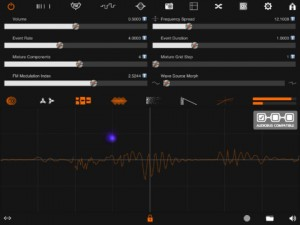
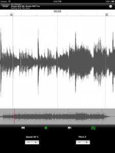
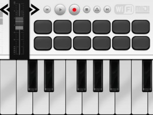
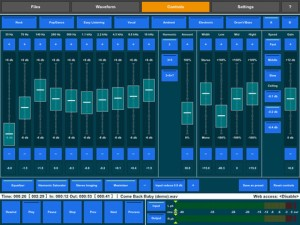
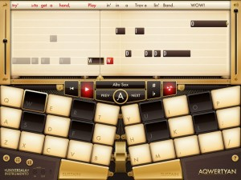
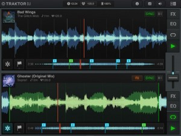
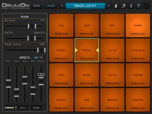
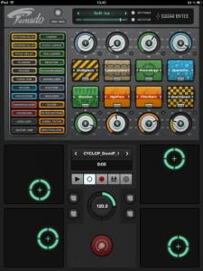

[appext 625740515]Multilevel Interactive Sound Synthesizer
“Stria” is the title of a very important composition by John Chowning and I would like to say that this computer music piece rapresents the manifest of Frequency Modulation technique applied to audio synthesis, invented by Mr. Chowning himself.– Up to 240 Frequency Modulation Oscillators or simple Wavetable Additive
– Five Spectral Pitch Grid Generators (Geometric, Harmonic, Fibonacci, Scalar, Temperated)
– Event Pitch Jittering
– Event Envelope
– Oscilloscope and animated XY Pad
– Effects chain: Doppler, Chopper, Glitch Gen, Sync Grain, Spectral Arpeggiator, FDN Reverb, Dynamic Compressor/Expander
– Save unlimited Snapshots number
– Pad interpolating snapshots
– MIDI/Network Control Change input
– Connection Control: Midi, Scrub Y and Accelerometer X/Y
– Capture Master Audio Output
– Run Audio in Background
– Embedded User’s manual
– Up to 25 built-in snapshots presets
– Sonoma Audio copy and paste
– Dropbox supports
– Audiobus compatible
Stria
AudioStretch Lite
Now available as a free trail, this audio processing app lets you change the speed and pitch of non-DRM songs in your iTunes library. Pretty handy for learning songs. Obviously there are a few limitations on this one (see below). So if you find a use for it, the full version is only a couple of dollars. For something with a few more features, Anytune is a great alternative.
[app 647190921]Change the speed of audio files without changing the pitch. Listen as you drag the waveform. Transpose your music. Loop.
All in an incredibly responsive and easy-to-use app. Ideal for transcription, learning songs by ear, or just listening to your music library in a new way.
FEATURES
• Simple uncluttered user interface
• LiveScrub™ : listen as you drag/hold the waveform
• Super-easy single-button looping feature
• Load any song in your music library*
• No ads or in-app purchasesLIMITATIONS OF LITE VERSION
• Max song duration 5 minutes
• Speed range 60% to 100%
• Pitch shift +/- 2 semitoneFULL VERSION ADVANTAGES
• Max song duration 60 minutes
• Speed range 0% to 250%
• Pitch shift +/- 12 semitones
• Keyboard/spectrum display
• Open Dropbox files
• Open email attachments*Except Fairplay DRM-protected files (i.e. very old, pre-2010 iTunes purchases). Songs in formats other than aac/m4a (e.g. mp3) may load a bit slowly in iOS 5.1; iOS 6 recommended.
AirMidi
AirMidi is an iPad App that lets you connect your device to your favorite DAW throw a Wifi connection.
Steps.
1) Turn on your WiFi spot.
2) Open MIDI Setup on Utilities folder.
3) Click on “Show MIDI Window”
4) Double click on Network section.
5) Open Logic or your favorite DAW.
6) Assign key-commands by “learning” MIDI.
7) Save. Enjoy.[app 646384689]
Audio Mastering
The first fully functional audio mastering application for iPad. For everyone who wants to make own music tracks excellent quality. Based on the same algorithms which used in professional plug-ins this application turns your iPad into a real mastering studio.
This all-in-one tool lets you process sound, convert audio formats, change sample rate, convert bit depth, cut part of track for preview and make fade-in and fade-out.
With very easy and clear interface you can tweak all controls in real time and listening to the final result right away.
Built-in presets let you quickly find the general mood of your composition and a slightly tweak to get a best result. If you make own preset that you want to use later, you can save it as a preset hotkey.
Audio processing features:
● Linear phase 10-bands graphic Equalizer based on phase shifting.
● Three bands Stereo Imaging with common Stereo Width level.
● Harmonic Saturator with three sets of harmonics.
● Loudness Maximizer with adjustable response speed and ceiling.
● Sample rate converter from 96, 88.2, 48 to 44.1 kHz.
● Bit depth converter supported 16, 24, 32 bits.
● Dithering with noise shaping.
● Supports .wav, .aif, .mp3 audio file formats.Application features:
● Predefined preset hotkeys, ability to create own presets.
● All processing settings are stored for each file.
● Processing group of selected files.
● Exchange files thru internal Web service.
● Compatible with AudioCopy / AudioPaste.
● Supports iTunes file share.Compatible:
iPad 2 and higher is recommended. Generally this application can be run with iPad 1 but there is possibility of dropping the signal out when playback, especially at frequencies above 44.1 kHz. Offline processing can be done with any iPads quite well.
Please note: This application is audio processing tool only. It does not have audio editor functions.
For more details – http://audio-mastering-studio.blogspot.com.au/
Developer: Igor Vasiliev
Aqwertyan
[app 584106288]Perform the music of your favorite songs! It’s music at your fingertips – with stunning retina graphics!
Pick from over 100 different instrument sounds and choose your part in the band. If you can type, you can play! HUNDREDS OF THOUSANDS OF SONGS AVAILABLE – Aqwertyan lets you perform the music of any midi or karaoke file! Choose between a piano-style or qwerty keyboard, and adjust the difficulty – even let any key you hit play the correct note! No instrumental skills necessary!PERFORM VIRTUALLY ANY SONG
– Perform the music of any MIDI or KAR file
– Video game music, pop songs, karaoke, classics, movie themes, gospel, and more!
– Choose from millions of songs!
– Find your favorites fast. Simple in-app web search for song filesMAKE IT EASY OR HARD
– Collapse chords into single notes
– Allow any key you hit to play the right note
– Choose between qwerty or piano-style keyboards
– The band leads or plays along with you, at your pacePERFORMANCE FEATURES
– Next key to play is highlighted
– Listen and watch the keys move on ‘Autoplay’PERFORMANCE STATS & FEEDBACK
– Get stats including correct notes played, notes played on time, and average time off
– Tempo training in ‘Any Key’ modeMIDI COMPATIBLE
– Use your external MIDI instrument or device for performance
– See a visualization of each channel in the midi fileMAKE YOUR OWN ARRANGEMENT
– Pick Solo, Mute, or Band for each channelSHARE THE JOY OF MUSIC
– Send songs to friends via email
– Challenge them to a playoff!
– Jam sessions with each person playing a different part in the bandSING KARAOKE
– Lyrics are displayed with the music
– External microphone supportedIMPROVE YOUR TYPING SKILLS WHILE YOU PLAY!
– Notes are displayed as letters on the keyboardMUSIC EDUCATION
– Tempo, Rhythm, Pitch, Harmony and Instrumentation combined with performance measurementSTUNNING RETINA-HD GRAPHICS!
If you can type you can play any song, using your choice of over 100 traditional instruments. There is nothing new to learn; Aqwertyan uses your muscle memory from typing to make performance easy! Now you can make music everywhere you go! Even if you have never played before, you will playing enjoyably within minutes, because you have been ‘practicing’ on this keyboard your whole life.
Grab more details here – http://www.aqwertyan.com/
Cycloop in bound
The team at Amidio are no strangers to crafting some pretty unique music making apps, so I’m looking forward to their next upcoming product, Cycloop, which they have started teasing on their website. Here’s an excerpt –
Amidio has been among the very first music app makers since the beginning of AppStore, and for nearly 5 years we have been dreaming of making the ultimate music creation app. Something which would bring the pure excitement of the creation process, easy enough to allow creating tracks without digging across hundreds of menus, but still delivering a whole lot of possibilities and ways to express emotions and feelings.
We are not going to make a clone of existing DAW apps. Instead, we choose a special way, something you’ve never seen before. Cycloop is going to inherit certain decisions from the famous DOS trackers (Scream, Impulse, Fast trackers), along with some Songineer and MINT.io motives.
Expect an app that can possibly fulfill any mobile musician’s needs. Multitracking, plugin-based insert & send FX, built-in IDM and randomizer tricks, scale manipulations and flexible sample/synth architecture. All that packed (but not crowded) in just several clean-designed screens (no neon this time!) of pure touchscreen music-making goodness, and working in conjuction with our existing (and future) apps.
Cycloop will run only on the iPad. We will reveal more details as we proceed with the development. As of today, the design is finished (which took an incredible amount of planning and prototyping), fully documented and the code is at 10% completion mark. We are musicians ourselves and strongly keen to release an first-class, mind-blowing app. If everything goes well, it could happen in late Summer. Stay tuned!
Keep an eye on their blog for updates –http://amidio.com/newsblog/
Traktor DJ for iPhone
Following up the recent launch of the iPad version, comes this pocket friendly update for iPhone.
TOUCH THE GROOVE. The world’s #1 pro DJ software brings high-impact DJing to iPad. Touch your tracks and create stunning mixes in seconds.
– Revolutionary DJ app by Native Instruments – makers of the leading pro DJ software
– Touch the groove using familiar swipe and pinch gestures
– Direct access to your iTunes music library from TRAKTOR DJ
– Stylish waveform display allows for simple looping and ultra-tight scratching
– Intelligent browser recommends songs based on compatible tempo and key
– Automatic tempo and key detection plus BPM sync for super-smooth mixing
– Innovative Notification Center gives you in-app access to essential tips and undiscovered techniques
– 8 built-in pro DJ effects including Reverb, Delay and dramatic glitch effects like BeatMasher
– Familiar DJ mixer layout with crossfader, 3-band EQ and filter on each channel
– Prepare tracks on the road – all metadata (tempo, beatgrids, cue points etc.) in TRAKTOR DJ syncs with TRAKTOR PRO DJ software*
– Record your mixes live in high-quality on the iPad and share with your friends* Free Dropbox account required.
[appext 592052832]
Drum On
Another week, and another drum app makes a splash in the app store. I must have about 20 drum apps on my iPad alone (although I am partial to playing real drums)!
[appext 642348750]DrumOn is a professional mobile Drum Machine made by Tapgic Technology Limited.
DrumOn is designed for both pro drummers and other musicians. It turns your iPad into an advanced drum pad just like a real electronic drum pad, so you can Jam with your band anywhere just with your iPad.
DrumOn is developed with customized high-fidelity audio playback system and loaded with many great Drum kits and Sounds. All sounds are over 16bit/44.1kHz to 24bit/48kHz PCM quality which are produced in Tapgic Music Studio.
Tips:
1, Better Operating Experience with the Multi-Touch Gestures disabled in iPad.
2, Better Sound Quality with Headphone or Speaker.Supported Devices:
iPad1,iPad2, The New iPad,iPad4,iPad MiniMain Features:
▪Over 16bit/44.1kHz to 24bit/48kHz PCM quality sound bank with maximum polyphony of 32-notes.
▪Each Drum Kit has a individual rhythm Demo playing in loop, you can change the drum kit when you play.
▪Realistic Choke Performance of Pedal Hi-Hat, Closed Hi-Hat and Open Hi-Hat.
▪Real Touch-Velocity let you play like a real instrument, the harder you play, the more dynamics and volume you’ll get.
▪Available to change the drum pad numbers from 8 to 12 or 16 to get bigger area or more sounds as you need.
▪Available to open or close the pad names.
▪Exclusive Function Side-Bars are available to open or close by the top-bar buttons or two-fingers touch gesture.
▪Full control of individual pad’s Level and Pan, each drum kit has a built-in setting and you can change it.
▪Full-featured built-in metronome which is absolutely accurate with the industrial quartz precision.
▪Hight quality effect module for the global output including OVERDRIVE, REVERB, DELAY (iOS6+ ) is fully user-defined. You can also the change the effects order to get different sound effect.
▪Music Player lets you import your music tracks to Jam with, you can change the Volume, Loop and Speed of the music tracks.
midi Sampler
[appext 641950873]“midi Sampler” turns your device into a sampler for professional musicians and / or DJs composers able to:
– Create the entire musical instrument from a single sampled sound
– Receive MIDI messages from an external MIDI keyboard and play the corresponding notes
– Turn any MIDI keyboard in any musical instrument / special effect that you wantFeatures:
– Import any type of sound and automatic generation of the scale of sounds (8 octaves)
– Ability to store an infinite number sounds using the archive of sounds (“Samples Archive”) of “midi Sampler”
– “Samples Collection” with many sound samples free downloadable
– “General MIDI samples” FREE library downloadable from the “Samples Collection”
– Two independent keyboards multi-touch (24 + 24 keys) with independent octaves control for each keyboard
– Ability to receive the MIDI messages from an external MIDI keyboard / MIDI device (with independent octaves control)
– Filter for the MIDI IN messages
– “Bending” control to change the sound in real time
– “Sample Start Position” control to remove the initial part of a sound sample (eg silence) by specifying the start time instant of the sample (AUDIO CUT FEATURE)
– “Sustain Pedal”
– Multi voices (up to 96)
– Default “GRAND PIANO” sample
– Ability of “recording” of musical patterns during live performances:
enabling the recording (using the “midi Sampler” recording button), “midi Sampler” will record (audio file) the music played by the user using the keyboard (multi-touch keyboards or external MIDI keyboard)For a full rundown on this app – http://www.ngcybit.it/iTunesApp/midi-sampler/
Turnado
Has the music app world been waiting for a storm of an app like this? I think so! If this doesn’t bring some spice to the life of you music, nothing will!
Turnado is a revolutionary multi-effect tool, crafted especially for massive real-time audio manipulation. It combines unique and dynamic effects with the most intuitive and immediate control you can imagine. Just turn it on and crank it up.
Take it to the stage and unleash Turnado’s true power. With instant access to eight effects and immediate control over key parameters, Turnado is guaranteed to cause devastation on the dance floor, shredding beats and crunking breaks to insane proportions.Features at a Glance:
– 4 XY-Pads to control 2 Effects simultaneously (X,Y)
– Integrated Player (iTunes File Sharing, Music Library, Factory Loops)
– Integrated Recorder (div. Optionen: Start/Stop/Sync/Länge)
– Live Modus (Inputs & Outputs selectable)
– Audiobus Support (Sender & Filter)
– Audiocopy™ / Audiopaste™
– Full Midi Support (Virtual, Network, Extern)
– Midi Clock Sync
– Jack iOS Support
– ZoomThe idea is simple:
Turn a knob and the effect is on.
Turn the knob further to adjust effect parameters and apply modulations.
Turn the knob down and the effect is off.With its instantaneous, one-knob, multi-parameter modulation features, Turnado will lay waste to the audio landscape. Giving you the power to crunch, chop, twist, mash and elevate your music to new levels, Turnado will have you creating wicked new sounds that will blow any crowd away.
Unlocking the power of your MIDI controller each effect requires only one knob to control it. Underneath this simplicity lies a matrix of effect parameters and modulation engines, all controlled by the main knob. This control matrix provides serious depth to the plugin and gives you the ability to create original and truly unique effect programs.
If the power of one-knob action still doesn’t rock your boat, the awesome “Dictator” mode will sink your battleship. It allows you to animate all the main knobs and run that animation with just one fader. That’s one fader, controlling up to 8 different effects, with potentially hundreds of parameter changes!
Turnado’s primary focus is on beat manipulation, so you will find lots of loopers, slicers and grain tools in the rack. Alongside these beat-mashing effects are an arsenal of distortions and filters as well as first-class delays and reverbs. With extensive modulation possibilities each effect can produce millions of unbelievable variations that can be morphed and twisted into something new every time you tweak those knobs.
Turnado will inspire you again and again, delivering completely new variations of your original sounds and grooves every time, so what are you waiting for…turn it on.[appext 614418823]


{kind=link}
{kind=link}
{kind=link}
{kind=link}
{kind=link}
{kind=link}
{kind=link}
{kind=link}
{kind=link}
{kind=link}
{kind=link}
{kind=link}
{kind=link}
{kind=link}
{kind=link}